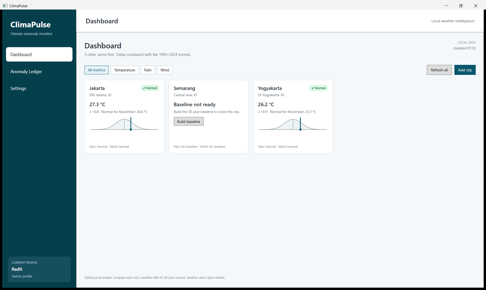
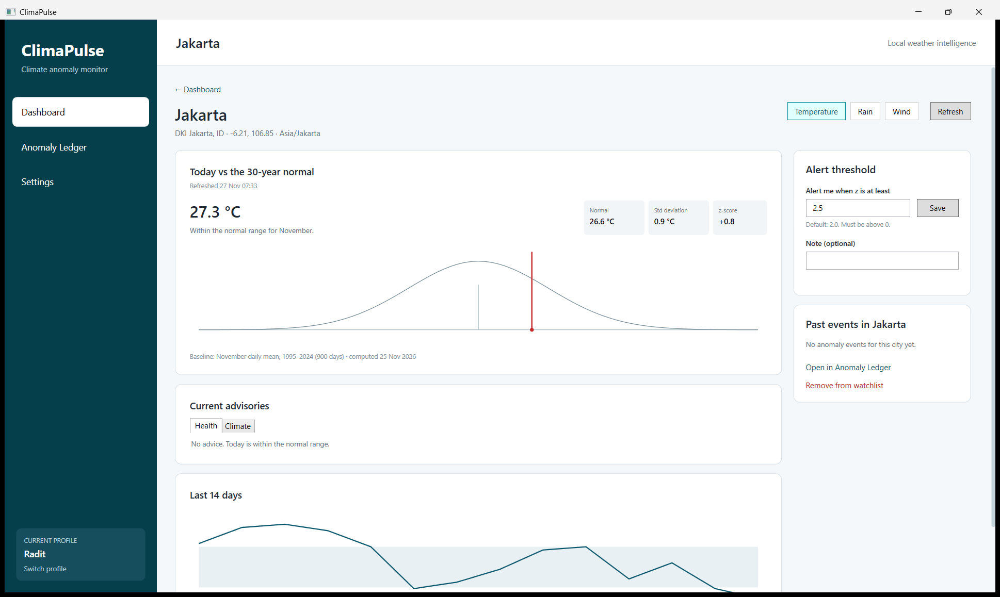
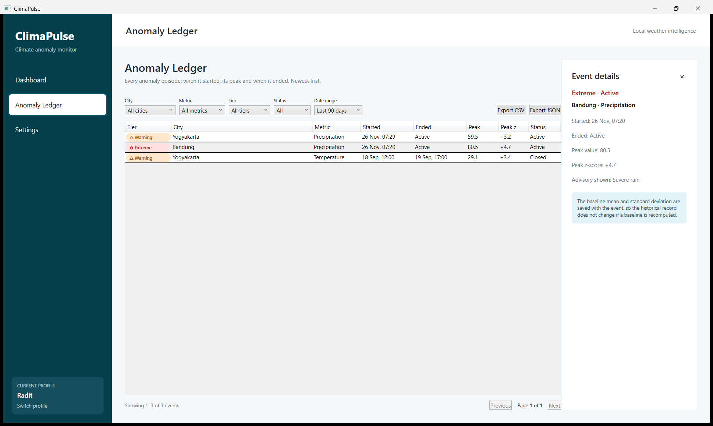
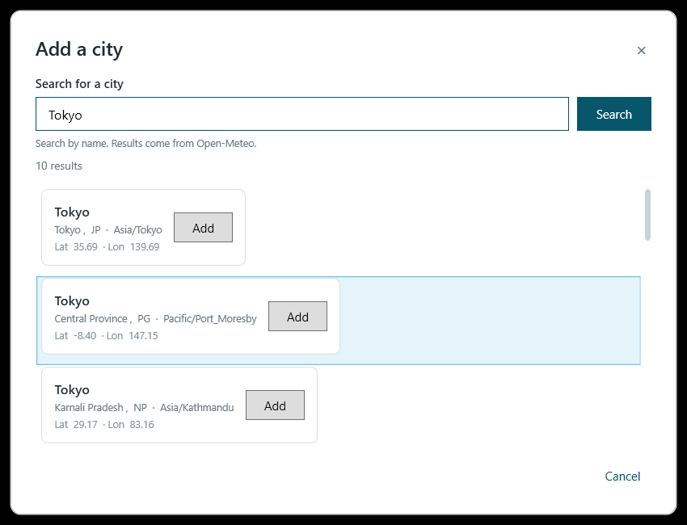

See how unusual today's weather is
ClimaPulse is a Windows desktop app that compares live weather in your cities with a 30-year normal, and tells you in plain words how unusual it is: Normal, Watch, Warning or Extreme.
Windows 10 or 11, 64-bit · needs PostgreSQL · free, no account

How it works
Add your cities
Search any city by name. ClimaPulse downloads 30 years of daily history for it once (1995 to 2024).
Compare with the normal
Today's reading is compared with the normal for that city and month. The z-score says how many standard deviations away it is.
Read the risk and advice
Every city gets a tier with health and climate advice. Each anomaly is saved in a ledger you can export as CSV or JSON.
Screenshots



Team Mendoan
Nalen Raditya Sadewa
Group leader · software architect · 536801
Muhammad Ibrahim Asy Syauqi Wahyuaji
Backend developer · 5327610
Christania Putri Rachmadewi
Frontend developer · 532874
Arya Raditya Ardana
UI/UX designer · 536660
Get the demo
- Install PostgreSQL and run:
createdb climapulse - Set
CLIMAPULSE_DB_CONNECTIONto your database (host, port, user, password). - Download
ClimaPulse-win-x64.zipfrom GitHub Releases, unzip it and double-clickClimaPulse.Desktop.exe. No .NET install needed.
Usage guide: README, Try it